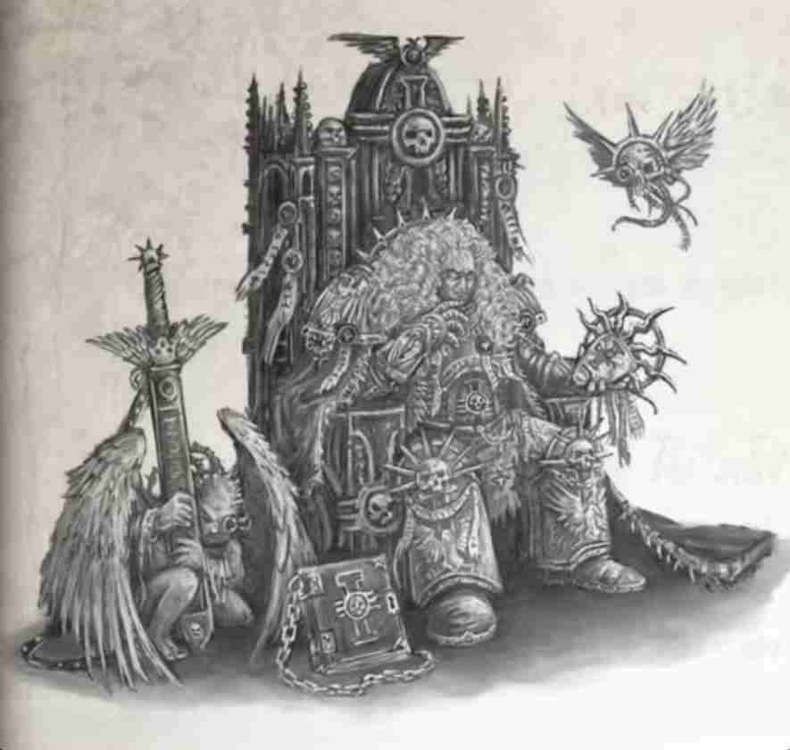
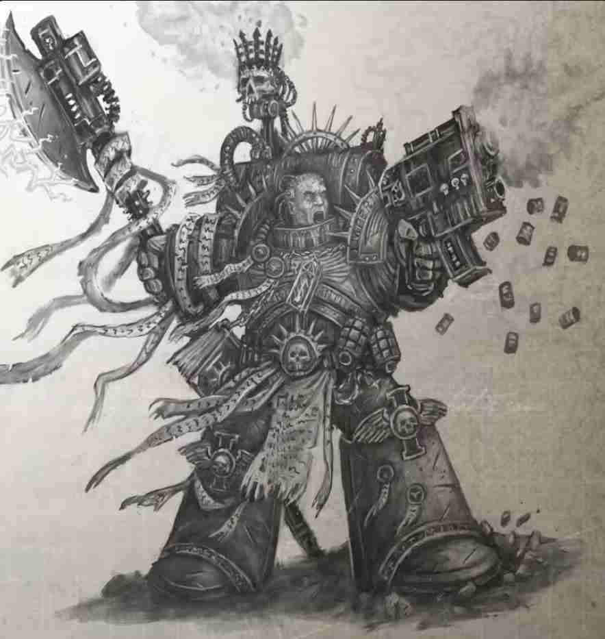
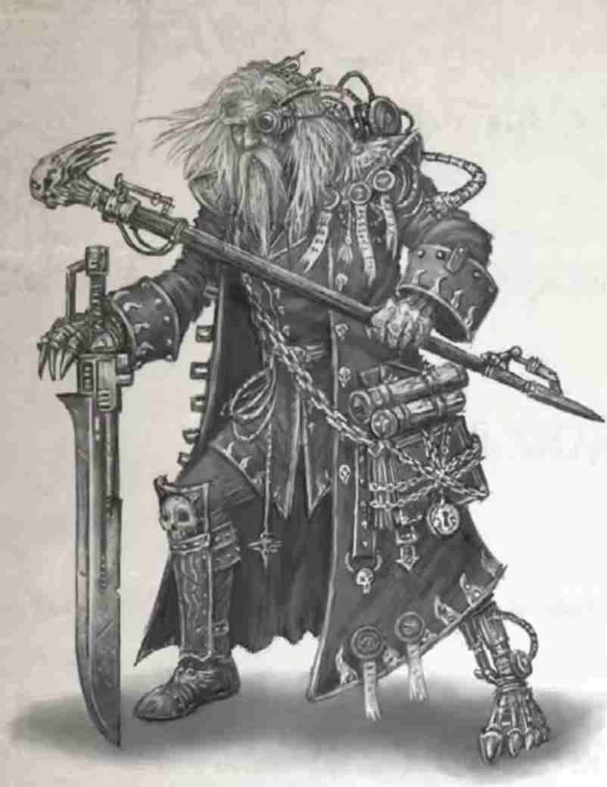
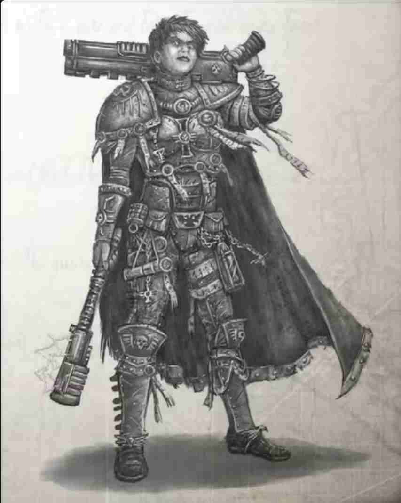
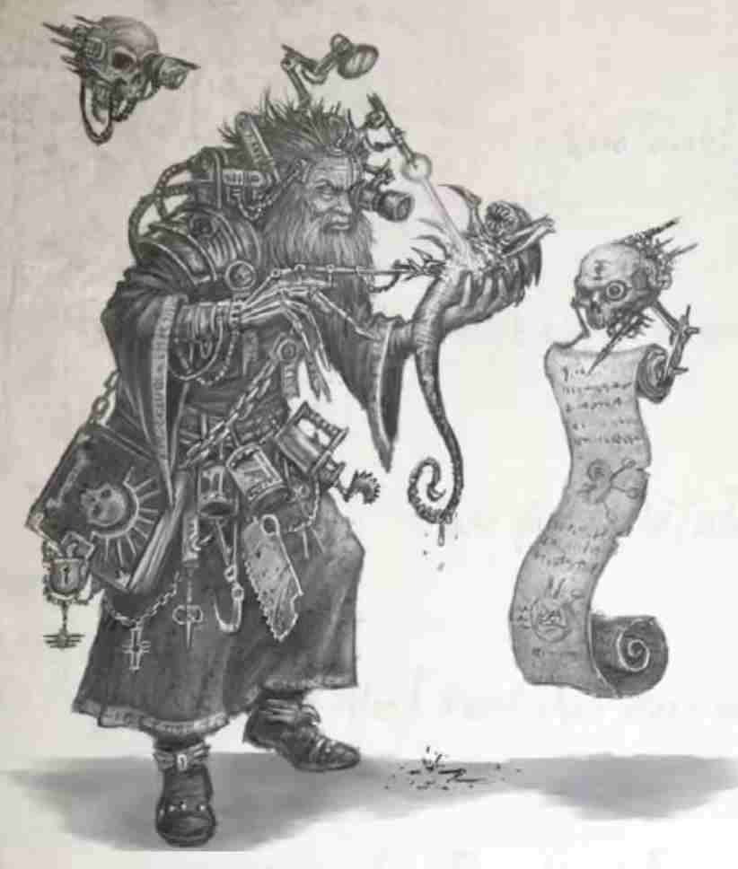
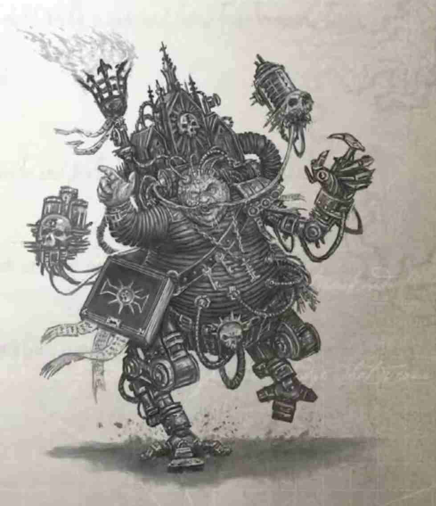
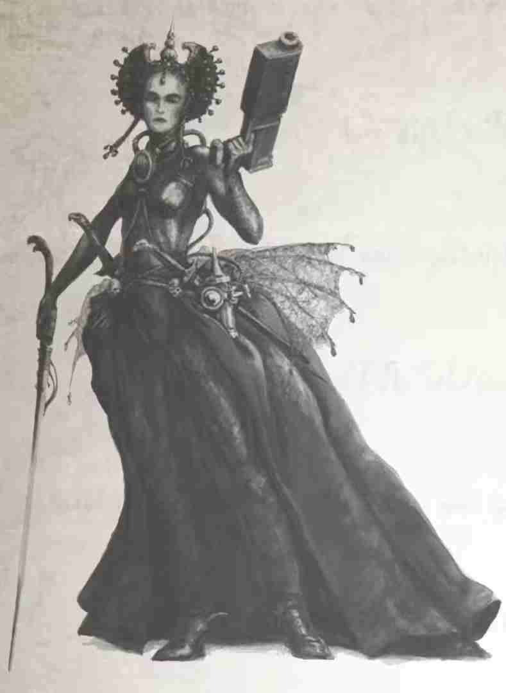

卡利西斯审判庭与暴君星
【译者：维维豆糕】
卡利西斯秘会
负责坐镇卡利西斯星区的审判庭分支名为卡利西斯秘会，由大审判官凯丁监管。卡利西斯秘会的高阶议会和官方办事处是位于辛提拉的三角宫（Tricorn Palace）。除此之外，卡利西斯秘会在大多数主要世界或人口密集的星球周边，都设有诸多下属办事处，通常还会伴有一座阴森的防御据点。下属办事处的管理者被称为行星审判官，负责控制当地的地方议会，这些地方议会类似于高阶议会的缩小版。卡利西斯秘会可以随意调遣部队、飞船和侍仆，但秘会最宝贵的财富是审判官自身，他们所掌握的技能与权威远超大多数帝国公民的想象。卡利西斯秘会监视着整个卡利西斯星区，它的管辖范围无边无际。
需要注意的是，尽管有凯丁和高阶议会的统领，但卡利西斯秘会的审判官仍各行其事。他们是独立的个体，专注于各自的任务和事业。对于审判庭应如何运作、该如何维护帝国，每个人都有坚定不移的不同观点。没有两位审判官有着完全相同的计划，一些审判官甚至互为死敌。假设审判官们齐心协力，那他们足以成为卡利西斯迄今为止最强大的势力，即使最显赫的贵族门阀，也无法调动与之媲美的资源。但在这样的团结成为现实之前，卡利西斯秘会的审判官就是他们自己最大的敌人。审判官相互算计，暗中落实自己的目标，把侍仆当作博弈中的棋子。一些审判官高贵且虔诚，坚决践行着帝国的价值观；另一些审判官思想自由，或者用纯净派的说法，就是腐败堕落。任何一位审判官都可能成为卡利西斯星区最伟大的救世主，或者最臭名昭著的恶徒。凯丁和高阶议会竭尽所能，让各自为战的审判官们向同一个目标进发，但有时候，他们也不得不亲自下场，仲裁争端。
暴君智谋团
暴君智谋团是多年前针对可怖的暴君星预言而建立的。暴君智谋团的成员致力于调查幽魂太阳（spectral sun）的显现与暴君星的邪恶影响，因此他们也被称为“僭主”（Tyrantites）或“幽魂”（Spectarian）（有时被蔑称为“观星者”）。暴君智谋团的总部位于毒蛇堡。这座阴森的堡垒由历经岁月抛磨的黑石建成，矗立在辛提拉的卫星“巨蝮星”（Lachesis）之上。
译者注：Lachesis 应该是玩了个双关，这个词本意是指希腊神话中命运三女神之一的拉刻西斯，同时也是南美巨蝮蛇的拉丁学名。
毒蛇堡是典型的审判庭中转站，这类堡垒在整个卡利西斯星区都可以找到。在暴君智谋团成立之初，幽魂们就被授予了毒蛇堡的唯一裁量权。除此之外，只有星区总督哈克斯（Hax）、首席星语者晓（Xiao）以及其他少数人知晓毒蛇堡的存在，而那些不知情的人则会收到地质不稳定的警告，被要求远离巨蝮星。审判官泽贝通常会待在毒蛇堡里。在毒蛇堡那宏伟的觐见大厅里，泽贝会与暴君智谋团的审判官举行半定期会议，让他们汇报自己的活动并分享情报。通过这些会议，审判官们既能结交盟友和树立敌人，同时也能交流到卡利西斯星区内各种威胁和势力的情报。
由于暴君星威胁着整个卡利西斯星区，暴君智谋团的成员构成时有变动。这里列出的审判官已在卡利西斯星区待了一段时间，并承认泽贝的权威（但他们并非都绝对服从泽贝）。其他审判官可能会临时加入暴君智谋团，例如他们在其他地方进行调查，最终因涉及“黑暗异端”而被引到了卡利西斯星区。还有一些审判官之所以支持暴君智谋团，只是为了利用那些经验丰富的智谋团审判官和他们的专业知识。
这里列出的审判官是身份已确认的“幽魂”，但在泽贝的许可下，审判官随时都可以加入或离开。
科莫斯，暴君星
难以解释所谓的暴君星，但某些关键事实显而易见。
科莫斯在一则末日幻象中被提及，该幻象以末日启示般的口吻描述了一种“黑暗”，它将席卷人类的世界，并最终吞噬人类文明。而在这吞噬一切的黑暗降临前，会出现种种迹象和预兆，即所谓的“先驱事件”。这些事件将逐渐改变人类的思想，使人们准备好拥抱黑暗。许多人认为，这一预言明晃晃地指向了混沌与亚空间的崛起，但这一解释并未得到普遍认同。因为银河系中还存在着许多重大威胁，这一预言可能同样适用于泰伦虫族（学者们注意到预言文本中反复使用了“吞噬”一词），或与亚空间存在联系的灵族。然而，鉴于亚空间拥有扭曲现实的强大力量，暴君智谋团仍极为重视将预言归咎于混沌的观点。预言的手稿保存在毒蛇堡的档案馆中，泽贝只允许极少数亲信查看完整的抄本。
这本手稿被称为《黑暗异端预言》，在谈及“先驱事件”时，它多次提到“科莫斯”或“暴君星”一词。据说，科莫斯是黑暗侵袭的先兆，通常表现为一颗“黑日”或一个“带着黑色火焰的光环”。暴君星由一个亵渎的符文代表，对这一符文最贴切的描述是一只尖锐的鸟爪。迄今为止，这个符文仍无法被具体解释含义，在过去也从未出现过这样的符文。
在卡利西斯星区，会反复出现一种奇特现象，名为“幽魂太阳”。一个与预言描述相符的巨大“黑日”会神秘地出现在星区的不同地点。目前尚未确定它出现的具体间接周期，但泽贝认为，“幽魂太阳”的现象绝非巧合。
幽魂太阳每次出现的情况都不一样，但通常都遵循这样的模式：在几乎没有前兆的情况下，一颗幽魂般的恒星会在一个行星系统中自发显现，它外观上环绕着黑色的火焰，散发着神秘的未知辐射。在恶意地照耀了几天后，它又神秘地消失得无影无踪。当幽魂太阳的出现时，往往还伴随着灵能干扰、地质剧变和各类社会问题，比如大规模骚乱和动荡。
幽魂太阳最常见的显现情况是，它会在实际上会遮蔽星系的天然恒星，就像它将恒星占为己有。当星系的太阳变黑时，星系内的世界将陷入大规模恐慌。但有时候，幽魂太阳会以不那么直观的方式地出现，就像是夜幕中一颗奇怪闪烁的恒星，一个围绕卫星的虚幻光晕，随后便消失不见。
没有天文学家能解释这种怪异现象。幽魂太阳的出现无法预测，它的存在与人类科学相悖，任何深入研究都无从谈起。暴君智谋团认为，“幽魂太阳”就是暴君星科莫斯，因为它与预言中的各种描述极为契合。有人认为，暴君星是亚空间中某个星体的重影，透过磨损的空间结构映射进现实。还有人说，暴君星是一个镜像，是一颗部分进入现实空间的亚空间恒星，至今仍在寻找完全进入现实的方法。还有观点认为，暴君星是一个人造的天体，由人类无法理解的异形引擎驱动。
无论真相如何，幽魂太阳的现象都是既定存在的事实。在上个世纪，它在卡利西斯星区出现了十八次。每一次出现都引发了社会动荡和地质剧变。每当暴君星出现，周围的世界便会遭遇地震和火山喷发。而在它出现之前，这个世界会经历一段剧烈的动荡与变革时期。在暴君星出现前的两三个月内，这个世界通常会有比平常多得多的灵能者诞生或觉醒，人体的变异现象也会随之增多。
各类预兆将在整个世界普遍出现，通常表现为胎记、无缘无故地出现在墙壁上的奇异符文，以及各类狂热邪教的兴起。一些资料还描述了预兆性的间接目击，即在镜子、池塘、水洼甚至酒杯中的酒或水面上，看到一闪而过的黑焰太阳。
在暴君星降临之前，会出现大规模的恐慌与癫狂，但没人能够描述暴君星如何出现，又如何用有害的黑烟遮蔽星系的自然恒星。有些时候，这些社会动荡与混乱不会引发任何后果，虽然以上所有的预兆都有显现，但暴君星却没有出现。不过，这也可能是因为它显现的方式难以察觉。在至少两次有记载的降临事件中，暴君星仅作为一颗遥远的星星出现在星球上方，它并不比晨星大，也没有遮蔽当地的恒星。
暴君智谋团认为，他们工作的重要组成部分，就是追踪和调查这些降临事件，亲临现场，见证暴君星的显现。泽贝希望，能通过目睹暴君星的显现收集到重要数据。但在整个卡利西斯星区，暴君星的降临事件只是荒诞的神话和传闻。任何关于暴君星现象的官方声明都被审判庭谨慎地压下。

暴君智谋团的审判官
大审判官安东·泽贝（Anton Zerbe）
异端审判庭
受大审判官凯丁的亲命，安东·泽贝领导着暴君智谋团。他一丝不苟地履行着职责，坚信“暴君星”的黑暗预言确实存在。他极少离开毒蛇堡，频繁在智谋团内主持审判官会议。泽贝曾巡游帝国，追查泰拉诸庭内部的腐败与渎职现象，如今，他全心投入于领导智谋团的工作中。安东·泽贝总是戴着那副冷峻的金色面具，身穿华丽的镀金铠甲，端坐于毒蛇堡议事厅的王座之上，显得游刃有余。安东·泽贝并不平易近人，总是与周围人保持着距离。
安东·泽贝行事公正得近乎偏执，无论指控有多么严重，他都拒绝支持任何一方审判官。他的主要动机是遏制暴君智谋团的内斗，确保智谋团能够专注于它的神圣职责。他认为，如果有任何审判官派系在智谋团内占据上风，整个卡利西斯星区、乃至帝国本身都将迎来灭顶之灾。如果再团结派得偿所愿，智谋团必将堕入无序；如果赞西派占据主导，混沌必将侵蚀审判庭的事业；即使是阿玛拉斯派这样的纯净派，倘若他们达成目标，智谋团也必会一蹶不振。安东·泽贝试图阻止任何一方派系在卡利西斯星区内压倒其他派系，以避免“黑暗异端”的降临。除此之外，一切都不值一提。他甚至不惜招募侍仆，来挫败麾下某位审判官的计划。除了政治手腕之外，安东·泽贝还是一位强大的灵能者，但智谋团内鲜少有人知晓这点。安东·泽贝将自己的灵能力量留作底牌，以防某一时刻，他不得不亲自铲除某位极度危险的敌人。

猎巫人瑞克胡斯（Rykehuss）
异端审判庭
瑞克胡斯是巫师的噩梦，他坚信世间万物皆有罪过，而唯一的惩罚就是死亡。在他眼中，卡利西斯星区如同一个腐臭泥潭，巫师像苍蝇一样在其中滋生繁衍，而诚实虔诚的帝国公民则饱受罪恶的侵扰。瑞克胡斯那火爆脾气和慷慨激昂的演讲在毒蛇堡内广为人知，他总在督促审判官同僚采取行动，用正义的烈焰净化一切罪人，或让这些罪人永世不得翻身。瑞克胡斯身披精工打造的华丽盔甲。这套盔甲是机械教送给他的礼物，因为他在附近星区的锻造世界上狩猎了一个巫师教派。瑞克胡斯也是一位武器专家，他的军械库有着各式各类的兵器。
这位猎巫人的行事手段十分简单。他会前往某个特定的城市，看见了各处的罪恶之景后，便立即设立神裁法庭（Court of Ordeals），让虔诚的市民带着被指控的邻居和家人前来受审。当瑞克胡斯听说附近正在发生极其恶劣的异端行径时，他尽可能召集能拿起火把的民众，一同前往那里，笃信能凭借自己的武略，亲自处死那些罪人。许多人目睹过瑞克胡斯的暴行，有的人认为他是英雄，有的人则认为他是屠夫，这两种看法都是正确的。瑞克胡斯确实杀死了众多无辜者，但也有许多叛逆灵能者和邪教分子被他就地正法。事实上，瑞克胡斯本人并非像他行事手段一般轻率，他很清楚，自己无法杀死所有的罪人，但他那种令人恐惧的高调行事确保了帝国公民始终牢记，威胁在他们之间无处不在，当他们显露出软弱时，还有更大的威胁会接踵而来，降下惩罚。对于瑞克胡斯，无辜者的死亡虽然令人遗憾，但为了传播恐惧、抑制巫师活动，这微小的代价必不可少——无论如何，一切终将在帝皇面前明晰清楚。瑞克胡斯深信，正是星区中普遍存在的巫师活动，招致了“黑暗异端”的降临。
译者注：Court of Ordeals，现实里指中世纪欧洲的审判法庭，这类法庭通过宗教仪式或神裁法（即 Ordeal，表现形式有冷水或热铁测试）以被告是否经受起痛苦作为是否有罪的依据。

恶魔猎人阿玛兹（Ahmazzi）
恶魔审判庭
阿玛兹是暴君智谋团中唯一的恶魔审判庭审判官。他是一位头发灰白的年迈老兵，年近三百岁。审判庭的职责驱使他从泰拉一路辗转至帝国的最边缘，追捕恶魔与召唤恶魔的堕落人类。但如今，他已年老体衰。用他自己的话说，他来到卡利西斯星区是为了“沐浴在暴君星的光辉下，并探寻它的秘密”。
漫长的职业生涯让阿玛兹变得极度刻薄、悲观。他开始相信帝皇已死，混沌无法遏制，人类注定灭亡。阿玛兹认为，人类目前正经历不可避免的漫长灭绝，而帝国就是这一事实的怪异外显。在为审判庭效力的生涯中，阿玛兹曾涉猎激进思想，甚至因寻求恶魔知识而被纯净派同僚绝罚，但除了泽贝之外，智谋团内没人知晓此事。阿玛兹没有朋友，也不太在意别人对他的看法。当被要求讲述自己猎魔生涯的故事时，阿玛兹会勃然大怒，严词拒绝。不过，那些勇于直面的侍仆或许能赢得阿玛兹的些许尊重。阿玛兹年轻时曾是一位尚武好战的审判官，如今在私下里，他最梦寐以求的莫过于登上他的移动战坛，穿上盔甲，举起驱魔锤，再次冲入战场，与恶魔厮杀。阿玛兹认为，暴君星可能预示着人类不可避免的厄运，他希望在暴君星降临时，自己能亲临现场，见证那伟大的一天。

审判官阿斯丽德·斯卡恩（Astrid Skane）
异端审判庭
斯卡恩审判官是一位令人敬畏的女性，举手投足间透着资深法务官的威严气场。她作风强硬、足智多谋，是审判庭内部最为活跃的成员之一，总是亲力亲为地铲除腐败。斯卡恩的外貌十分引人注目，她面容刚毅，短发齐整，习惯穿着她在辛提拉担任法务官时的服饰，即那套黑色制服与盔甲，震击锤与霰弹枪也几乎从不离身。她敬重那些同样尊重她的人，将能力出众的侍仆视作平辈，对虚文褥礼则不屑一顾。
斯卡恩信奉再团节派，认为帝国必须经历彻底改革，才能减少民众苦难，而审判庭是唯一具备权力与能力推行变革的机构。她坚信，帝国的痼疾源于统治阶层的腐化。早在法务官时期，她便对堕落贵族深恶痛绝，这种情绪延续到了她作为审判官的工作中。她致力于肃清贵族阶层与帝国各部门的渎职行为，即使是她曾效力过的法务部，也逃不过她的审查。她梦想着有朝一日能让帝国脱胎换骨，让公正成为常态，而非例外，但她也很清楚，自己有生之年无缘目睹那天。正因如此，她倾尽所能，为正义而战，并期盼后来者能接续这场斗争。斯卡恩确信，暴君星的出现绝非偶然，必是某种召唤仪式所致。她认为，星区内潜藏着一个强大邪教，正通过巫术手段令暴君星降临人世。而她誓要亲手铲除这个邪教。

审判官范·维根斯（Van Vuygens）
异形审判庭
范·维根斯很少出现在毒蛇堡，他在卡利西斯秘会中代表着异形审判庭。范·维根斯沉默寡言，更像是一位学者而非战士，但必要时，他仍可以保护自己。相较于消灭异形，范·维根斯认为剖析和研究异形更有价值。
范·维根斯身形瘦削，戴着眼镜，身着档案管理员的长袍，确实不如那些高调张扬的审判庭同僚引人注目，但他的智慧与意志力举世罕见，即使深入探究异形思维，也始终保持着人性。他把人类和恶魔的威胁交给其他审判官处理，自己则专注于为帝国研究对抗异形的主要武器：了解异形所求之物，以及它们会采取什么手段获得这些事物。虽然范·维根斯钻研异形知识，但他并不信任它们，也绝不会与它们交好。他所研究的异形物种，无一不威胁着人类种族。
作为传奇审判官克瑞普特曼（Krymann）的亲传弟子，范·维根斯驻守卡利西斯星区，专监视着已知星图的边缘，警惕是否有泰伦虫族入侵的迹象。克瑞普特曼曾推测，之前泰伦虫族对帝国的入侵是在试探帝国的防御能力，下一次入侵将来自一个意想不到的方向。范·维根斯虽未发现泰伦虫群迫近的确凿证据，但卡利西斯星区各处无疑充斥着其他异形留下的影响。从古老的巨石遗迹，再到原始世界神话中那令人不安的相似循环，范·维根斯正拼凑一幅曾栖息于卡利西斯星区边缘的异形文明图景，而他并不喜欢自己的发现。自然而然地，他认同暴君星是异形造物的观点，担忧其与可怖的泰伦虫族有关。
（Krytmannn：全名 Fidus Krytmann，克瑞普特曼，异形庭审判官。泰伦虫群的命名者，他最著名的事迹有两项：一是在第三次泰伦战争中使用“焦土战略”，对泰伦虫群行进路上的世界全部执行灭绝令，这种冷酷至极的策略即使是他的审判庭同僚也无法忍受，最终他被审判庭判为绝罚叛徒。二是奥克塔琉斯战争时期，吸引泰伦与绿皮兽人厮杀，试图让帝国能渔翁得利，但最终却诞生了吸收绿皮特质的泰伦虫群，让帝国雪上加霜。不过这两件事都发生在 m41 末期，临近大裂隙开启，在黑暗异端跑团的时间线里尚未发生）

审判官格洛布斯·瓦拉克（Globus Vaarak）
异端审判庭
在担任审讯官时，瓦拉克因跳帮海盗船而受了重伤，他的身体因此支离破碎，严重浮肿。最终，他被截去双腿，借助机械腿和内置生命维持系统的机械装置行动。他的脸也严重灼伤，布满疮痕，鼻孔和口腔都被插入了辅助呼吸的导管。瓦拉克还失去了一条手臂，原来是那条手臂的地方如今被一条仿生义肢所取代。除此之外，瓦拉克还穿着一件呈肋纹的黑色紧身衣，勉强裹住他那臃肿的身躯，这套紧身衣集成了冷却与调节装置，用以维持他的生命体征。
瓦拉克信奉阿玛拉斯派的理念。他知道帝国严酷无情，但人类想要存续，就只能维持帝国现状。因此，他在卡利西斯星区致力于搜捕各类反叛活动，努力维持各势力集团之间的微妙平衡。鉴于他无法以普通公民或官员的身份活动，瓦拉克主要依托麾下多支侍仆团队开展调查。与其他智谋团成员相比，瓦拉克的手段较为巧妙温和，他更希望审判庭的介入能隐于幕后，并鼓励他的侍仆尽可能避免公开冲突与暴力。瓦拉克怀有一种自嘲式的冷幽默，也是一位善识人心、明辨是非的领袖。倘若他的势力能经久不衰，那新一代审判官将大都出自瓦拉克的审讯官行列中。瓦拉克之所以加入暴君智谋团，就是因为暴君星严重威胁了帝国社会的稳定。

奥莉安瑟·拉斯伯恩女士（Olianthe Rathbone）
奥莉安瑟女士自称不属于三大修会的任意一支。她出身于卡利西斯星区的贵族阶层，至今仍偏爱华丽的舞会礼服和精致的假发，她的装束在某位总督宫殿的舞厅里也毫不违和。但在这一身华服之下，她那双锐利如冰的灰色眼眸却透着一种无情的敏锐智慧。有人说，她原本是泽贝审判官麾下的审讯官，但两人之间从未透露出任何明显的熟稔迹象。奥利安瑟女士难以捉摸，与之结交更是无从谈起，她总能在不亲口明说的情况下，让周围的人都觉得低她一等。
实际上，奥利安瑟女士是个深藏不露的激进派。她信奉伊斯塔万派的理念，认为帝国若要强大，必先经受战争与灾难的洗礼。在她看来，卡利西斯星区早已臃肿腐朽、无可救药，亟需一场巨变来清除软弱堕落的公民。奥莉安瑟并不排斥清剿混沌信徒或自己深恶痛绝的变种人，但她也一直在设法操纵卡利西斯星区的权力结构。她打算通过巧妙地煽动星区内主要贵族门阀间的矛盾或叛乱，来将星区推向纷争之中。她也很乐意亲自推行这一计划，而她的侍仆在她眼中不过是收集情报的工具，对她可怖的野心一无所知。而暴君星，正是她实现目的的绝佳工具。